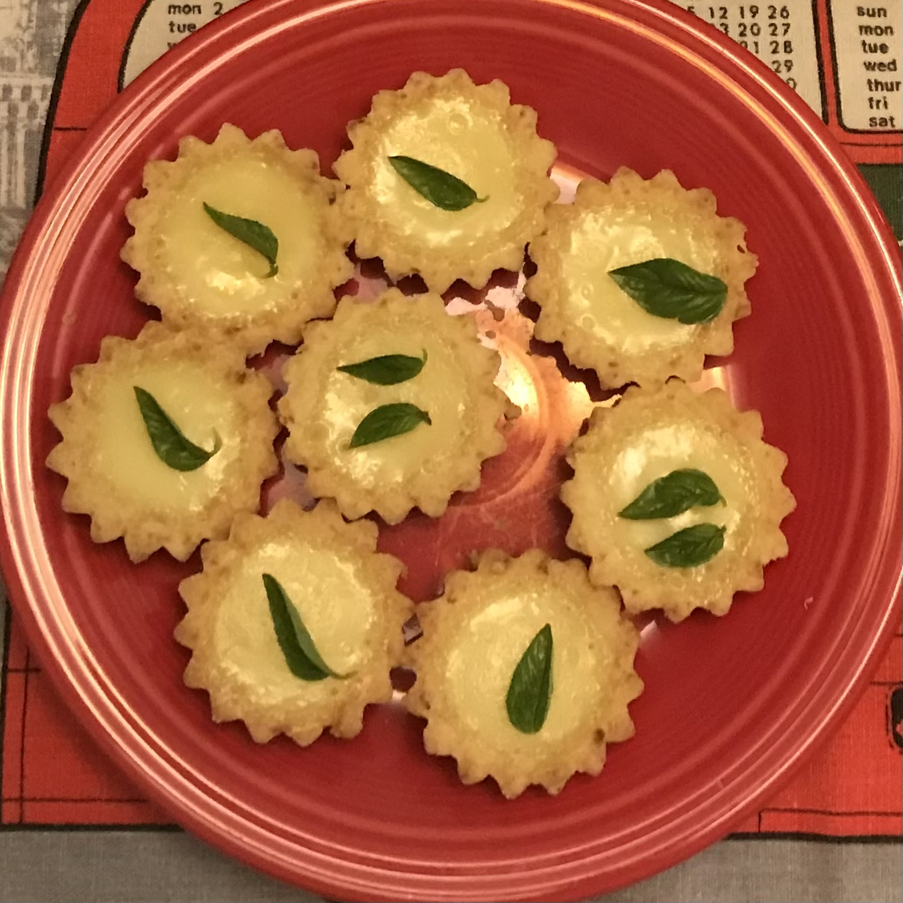

Mini Vegan Lemon Tarts

Description
My wife and I hosted high tea at our house last year. A couple of our friends are vegan, and we wanted them to be able enjoy themselves. I made these vegan mini tarts, and they were a hit with vegans and non-vegans alike.
The original recipe comes from The Little Blog of Vegan. Instead of whipped cream, we topped each tart with a basil leaf.
Preparation time is about 15 minutes. You will need 30 minutes for baking, and at least two hours for the mini tarts to set. This recipe should make between 8-10 tarts, depending on how much pastry and filling you use for each tart. You can make the crusts the night before, storing them in a sealed container in the fridge overnight.
Ingredients
Crust
- 2 cups plain flour
- ¼ granulated sugar
- Zest of 1 medium lemon
Filling
- 1¼ cup coconut milk (cream only)
- 1¼ cup granulated sugar
- ⅔ cup lemon juice
- ¾ cup dairy-free block butter
- 6 tablespoons cornflour
- Pinch of turmeric
- 10 fresh basil leaves
Steps
Crust
-
Preheat the oven to 350°F. Lightly grease a 8-10 mini tartlet tins with dairy-free butter.
-
In a medium sized mixing bowl, add in the flour, ¼ cup of granulated sugar, and lemon zest. Stir to combine. Add in the softened butter and, using your fingertips, rub the butter into the flour mixter until a crumbly dough forms.
-
Firmly press equal amounts of the dough into the tartlet tins. Use your finger to press down the bottom and up the sides. (Tip: as the dough is sticky, coat your fingers in some plain flour before pressing it into the tin to prevent sticking.) Prick the bases with a fork.
-
Place into the middle of the oven. Bake for 20 minutes or until lightly golden in color.
-
Remove from the oven and set aside while you make the lemon filling.
Filling
-
Drain the clear liquid from a can of coconut milk as you only want to use the thick white cream. In a medium sized saucepan, add coconut cream, lemon juice, 250g caster sugar, cornflour, and turmeric. Stir to combine.
-
Over medium heat, constantly whisk until the mixture thickens (about five minutes), making sure to break up any lumps. Once the mixture is thick and glossy, remove from heat.
-
Evenly distribute the filling over into the tart cases. Do this immediately while the filling is still warm as it is hard to pour when cold.
-
Place into oven and backe for 10 minutes. This will help bake and set the filling.
-
Once baked, remove from the oven and allow the tarts to cool in the tins.Set in fridge for at least two hours but preferrably six. If you don't allow them to set, the filling will be runny.
-
Remove tarts from tins. Top each tart with a fresh basil leaf or two.